PEDIA
Sato Pharma · Pedia
SATO
MONTHLY CLOSING
September 2026 · Lacto Advanced, Ivyronc and Guamusin
Specimen every figure is filled from the published Monthly Closing
- Sales
- 10,000,000 EGP
- Target
- 10,000,000 EGP
- Achievement
- 100.0% of target

- The month
- Closed by area, and by presentation
| Area | Sales EGP | Target EGP | Achievement | Share of line |
|---|---|---|---|---|
| Cairo | 2,600,000 | 2,400,000 | 108.3% | 26.0% |
| Delta | 2,000,000 | 1,900,000 | 105.3% | 20.0% |
| Giza | 1,900,000 | 1,950,000 | 97.4% | 19.0% |
| Alex-BHR | 1,500,000 | 1,500,000 | 100.0% | 15.0% |
| Upper Egypt | 1,200,000 | 1,400,000 | 85.7% | 12.0% |
| Others | 800,000 | 850,000 | 94.1% | 8.0% |
| The line | 10,000,000 | 10,000,000 | 100.0% | 100.0% |
| Presentation | Units | Value EGP | Share of line |
|---|---|---|---|
| Lacto Advanced 1Improved infant formula, 400 g | 40,000 | 5,000,000 | 50.0% |
| Lacto Advanced 2Improved infant formula, 400 g | 24,000 | 3,000,000 | 30.0% |
| Ivyronc SyrupIvy leaf extract, 35 mg / 5 ml, 100 ml | 30,000 | 1,500,000 | 15.0% |
| GuamusinPowder for oral solution, 12 sachets × 5 g | 10,000 | 500,000 | 5.0% |
| The line | — | 10,000,000 | 100.0% |
- Source
- The published Monthly Closing for September 2026 — the one source of truth for the sales and the target alike.
- Units
- Never totalled. Cans of two stages, bottles of syrup and boxes of sachets are not one quantity. The line totals by value.
- Scope
- Lacto Advanced 1 and 2, Ivyronc and Guamusin. Pedia only.
Sato Pharma · Pedia · Monthly closing
www.satopharma.com